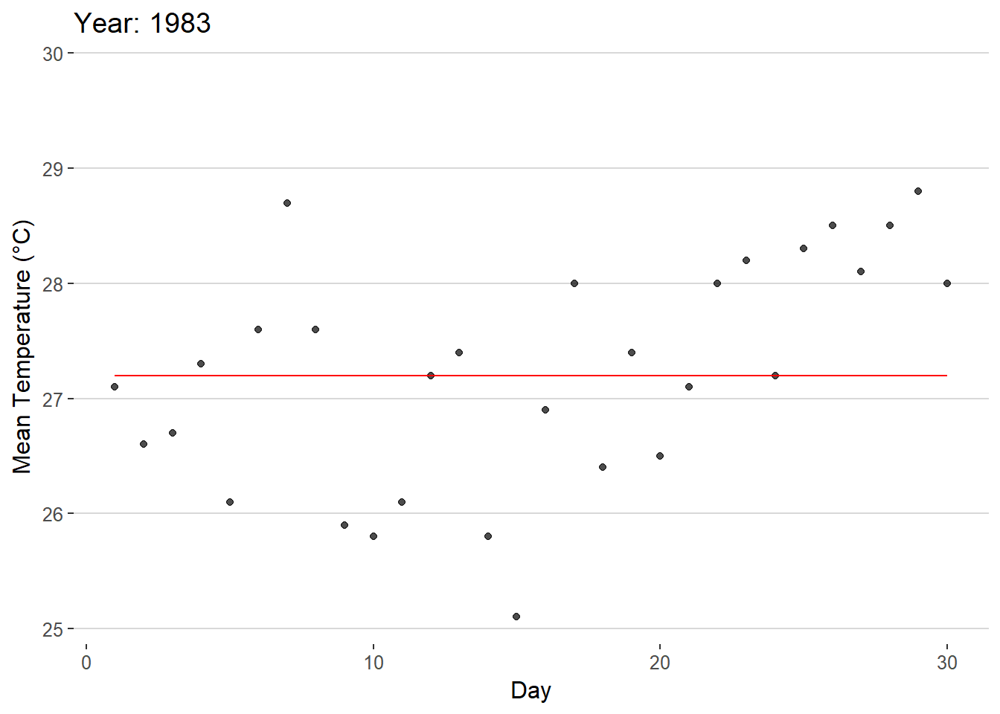

pacman::p_load(tidyverse, readr, ggplot2, gganimate, plotly, hrbrthemes, ggthemes) Take-home Exercise 3: Be Weatherwise or Otherwise
I. Overview
Climate change is a pressing topic in modern society. Given this, various reports have shown that the daily mean temperature is predicted to increase by 1.4 to 4.6 °C. With this the researcher has been encouraged to use visual interactivity to validate these said claims.
II. Data Preparation
Installing R Packages
For this exercise, the following packages will be required to create useful visualizations of the data.
tidyverse - A collection of packages for data manipulation and visualization.
readr - Provides functions to read csv files.
ggplot2 - A package used for data visualization and plot creation.
gganimate - A package used to animate plots made by ggplot2
plotly - A package used for creating interactive plots made by ggplot2.
ggthemes - A package that provides a variety of themes to improve the appearance of graphs.
Data Sets
There are 5 data sets for this exercise, all of which are downloaded from the from Meteorological Service Singapore website. The data to be used is the mean temperature of the Changi region of Singapore during September in the Years 1983, 1993, 2003, 2013, and 2023. The data is loaded using the code below.
temp1983 <- read_csv("data/Changi_Sep1983.csv", locale = locale(encoding = "latin1"))
temp1993 <- read_csv("data/Changi_Sep1993.csv", locale = locale(encoding = "latin1"))
temp2003 <- read_csv("data/Changi_Sep2003.csv", locale = locale(encoding = "latin1"))
temp2013 <- read_csv("data/Changi_Sep2013.csv", locale = locale(encoding = "latin1"))
temp2023 <- read_csv("data/Changi_Sep2023.csv")Data Wrangling
The data must then be put together into 1 data set called “Temps.” For the sake of simplicity, the data set is also reduced to only contain the relevant columns for the purpose of the exercise. The column containing the mean temperature is also renamed to “MeanTemp” for easier use of the data set.
Temps <- bind_rows(temp1983, temp1993, temp2003, temp2013, temp2023)
Temps <- Temps %>%
rename(MeanTemp = `Mean Temperature (°C)`)
Temps <- Temps %>%
select(Year, Day, MeanTemp)Finally, the average temperature per year is obtained and added to the data set as a new column labelled as “MonthAvg.”
Temps$Year <- as.factor(Temps$Year)
average_temps <- Temps %>%
group_by(Year) %>%
summarize(MonthAvg = mean(MeanTemp, na.rm = TRUE))
Temps <- left_join(Temps, average_temps, by = "Year")
Temps$Year <- as.integer(as.character(Temps$Year))
Temps$MonthAvg <- round(Temps$MonthAvg, 1)
Temps# A tibble: 150 × 4
Year Day MeanTemp MonthAvg
<int> <dbl> <dbl> <dbl>
1 1983 1 27.1 27.2
2 1983 2 26.6 27.2
3 1983 3 26.7 27.2
4 1983 4 27.3 27.2
5 1983 5 26.1 27.2
6 1983 6 27.6 27.2
7 1983 7 28.7 27.2
8 1983 8 27.6 27.2
9 1983 9 25.9 27.2
10 1983 10 25.8 27.2
# ℹ 140 more rowsThe resulting data set can be seen as above containing 4 columns, Year, Day, MeanTemp, and MonthAvg.
III. Interactive Data Visualization
Visualization
As the goal of the visualization is to showcase the change in temperature, the ideal way to showcase this is to show the mean temperature per year and clearly show how it is rising and/or falling. The data points per day can also be shown to further support the upward/downward movement of the temperature. Given that this is the goal, a dot plot appears to be the optimal manner in which to show this phenomenon.
A rough idea of the visualization can be seen in the animation below.
Show code
ggplot(Temps, aes(x = Day, y = MeanTemp)) +
geom_point(alpha = 0.7,
show.legend = FALSE) +
geom_line(data = Temps,
aes(x = Day, y = MonthAvg),
color = "red") +
scale_size(range = c(2, 12)) +
labs(title = 'Year: {frame_time}',
x = 'Day',
y = 'Mean Temperature (°C)') +
transition_time(Year) +
ease_aes('linear') +
theme(legend.position = "right") +
guides(color = guide_legend(title = "Average Temperature", override.aes = list(color = "red", linetype = "dashed")))+
theme_hc()
As can be seen in the animation, the data points are shown to rise/fall depending on the year. There is also a line present throughout the graph that showcases the mean temperature of the time period which shows the rise/fall of the mean temperature.
Interactivity
Given the 5 years available, a slider is the best tool to utilize when looking through the years. A slider emphasizes a sense of time passing for the viewer given the linear appearance of the tool. In addition to this, a slider, unlike the gif, will allow viewers to pick between specific time periods of their choice rather than having to wait for the gif to loop to the desired time frame. Most importantly, the movement of the slider when moving between each year will allow the viewer to easily see the overall movement of the data points as well as the mean temperature.
Show code
gg <- ggplot(Temps,
aes(x = Day,
y = MeanTemp)) +
geom_point(aes(frame = Year,
text = paste("Day:", Day, "<br>Mean Temperature (°C):", MeanTemp),
color = MeanTemp),
alpha = 0.7,
show.legend = FALSE) +
geom_line(aes(x = Day, y = MonthAvg,
group = Year,
frame = Year,
text = paste("Average Temperature:", MonthAvg)),
color = "black",
linetype = "dashed") +
scale_size(range = c(2, 12)) +
scale_color_gradient(low = "navy", high = "red") +
labs(x = 'Day',
y = 'Mean Temperature (°C)')+
theme_hc()
ggplotly(gg, tooltip = c("text"))In creating this interactive visualization, some important items were implemented.
Color was utilized to further highlight temperature shifts in the data set as the 5°C shifts in temperature throughout the years may not appear to be large at face value.
The monthly mean temperature line allows viewers to easily compare the differences between each year’s overall temperature. Without this line, the temperature shifts between certain years may be difficult to determine.
When hovering the cursor over a data point, the exact measurement and day is given to allow the graph to be easier to read.
When hovering the cursor over the dashed line, the average temperature for the year is given to allow the graph to be easier to read.
A clearer theme was used for the graph to improve the appearance of the graph.
Conclusion
While ordinary visualization proves itself to be extremely useful in everyday contexts, Interactivity adds a new dimension of analysis to the process. By adding interaction, users are given the ability to analyze the data in a more active manner by choosing what data points they seek to compare. Interactivity turns the process of viewing graphs from a passive action to an active one where users are encouraged to analyze the data for themselves and look further into graphs.